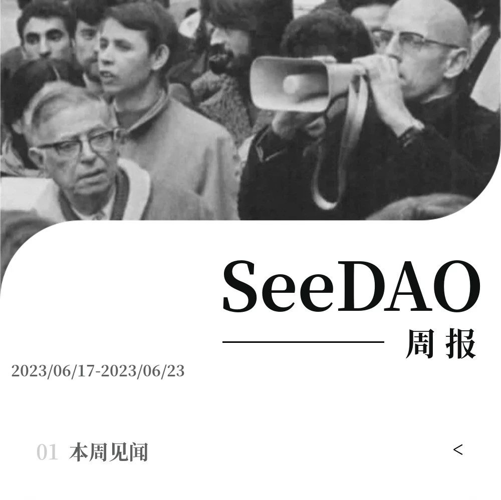
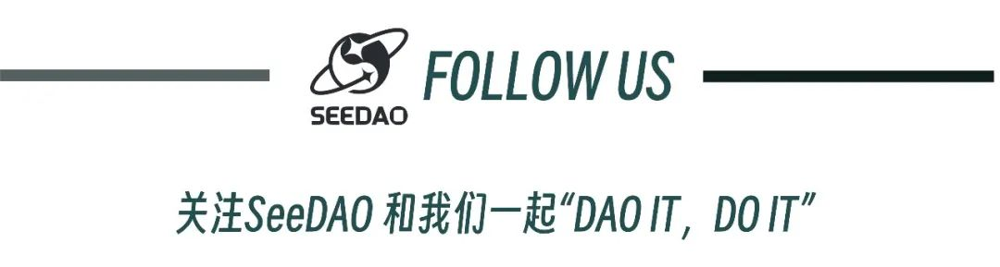

SeeDAO周报 See U Weekly
作者: SeeDAO
分类:
SeeDAO, Web3, DAO, SeeDAO周报
SeeDAO周报 | 2023.06.17-2023.06.23

https://mp.weixin.qq.com/s/LmuDX4IhGAzNtG2P6uf-Vw第3期新手营活动多多，“ 分享 ” “ 间谍 ” “八卦 ”，总有一个打动你
1.1 Web3烹饪战队：
康师傅分享“有手就行NFT合约部署”、队内展开UGC创作
1.2 Seegirls战队：
多轮讨论占卜、MBTI，魔雾占卜室开启试运营阶段
1.3 🥬带了也没写战队：
深度探索NFT有望掀起SeeDAO NFTFi风暴
1.4 疯魔队：
脑暴团队成员共同点，期待找到队内最大的发力点https://deschool.app/origin/series/642b93c843c746d70c683a82/learning?courseId=6491b3a236b620d7f6adc4c4
6月22日的研发公会周会，白鱼介绍OS最新的开发进度及合作状况。
https://www.youtube.com/watch?v=Dm8xqBjF2Mg
https://moledao.io/#/ai-hackthonhttps://forms.gle/5pNq4SZv1kQ4j2ng6…
分享会发起于新手营，但不止于新人，欢迎探讨从更长的时间维度来看DAO带来的变革https://mp.weixin.qq.com/s/Zotffta92iflmBSgl6S16A
招募｜市政厅伙伴计划市政厅招募
财务小伙伴、Mod活动主持、Mod发现员
https://www.notion.so/00d53072b85a48d3abcc7398f2a7e1d5悬赏酒馆：项目招聘|视觉设计
SeeDAO公众号更迭头尾图设计
https:///www.notion.so/Seed-5541fd602a4c4d3e93c5ea81a880346dhttps://docs.google.com/forms/d/e/1FAIpQLSdZXrH_vNJalgWzZAK